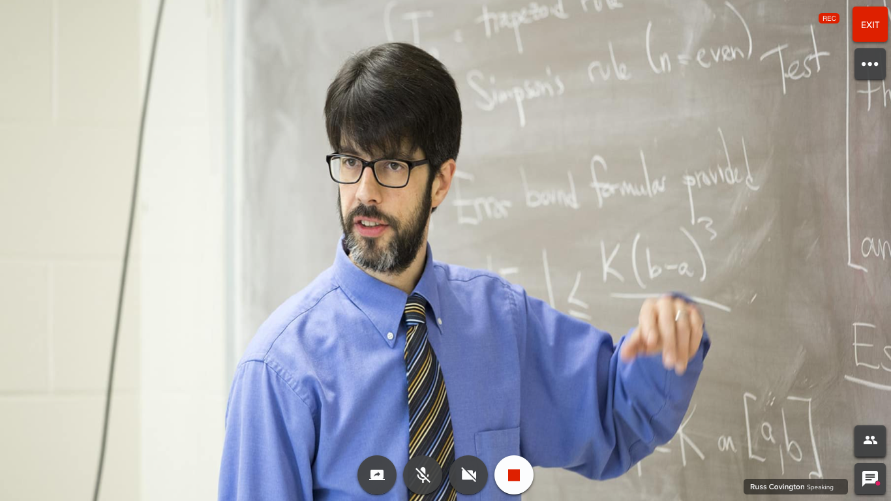

Airstack is an application that allows business owners, managers, and teams a place to collaborate and organize their apps, docs, and tools.
I am the lead user experience designer for the meetings feature inside of Airstack. This has included visual design, interaction design, sound design, and animation design when necessary. We code-named it AirConference because we were taking what we learned from an earlier product, AirClass (RIP), and marrying it with new technology so it could be used across multiple products at Lenovo. AirConference has its own users, business requirements, and release dates, so it almost lives and breath like a standalone product.
I am also leading the visual and interaction design for Airstack's mobile application.
We knew a few things going into initial conceptions of AirConference. We knew that our user's biggest frustration with meeting tools in general (AirClass included) was that it was too hard to get in. Create an account, download an application or an extension, and learn an overly complicated user interface. We also knew from our initial marketing efforts that AirStack was going to be built for small to medium businesses.
From a business standpoint, we wondered if we could also build backend services and UI that could be changeable to be used across other products sold at Lenovo.
The first step for me and the team was finding what users needed and expected in every meeting. I sketched a few ideas out on paper, and usually, this is my first step of any new idea I am working on. Then, I took a paper prototype to a small business where I sat page by page in front of approximately 10 different users.

The paper prototype had wireframes with a few buttons and interactions, which allowed me to ask each person what they expected the buttons to do and if there was anything we were missing. As usual, there are always assumptions and hypotheses on my part but finding out if those are true is gold. For instance, we had been using an icon Google had been using to exit an application. When we presented it in front of those 10 users almost all (8/10) had no idea what it meant, which is why we now show the word “Exit.”

After analyzing the data received from our onsite visit I created a more refined version. This version allowed me a little more flexibility with my testing where I could utilize our UserTesting account, email, and placing it in front of unsuspecting victims at the coffee shop. This part of the process is the meat of the process as it still goes on today. Any new feature, idea, solution to a problem will go past one or more of these types of testers.
We found at this stage that users were less impressed, or maybe cared less, about the vibrancy of the interface because the most important thing was whatever a user was sharing (either their screen or their face). We used these findings to guide the look and feel of the UI of AirConference.
So, what is happening now?
Sustaining? No, not really. Ideating on the product has been our focus. Not that it was intentional but has happened because of the time we spend with our users and understanding their pain points. Slowly, Airstack has been getting in the hands of some of our external beta users, we have been dogfooding our product, and getting a lot of internal insight. Along with that, I have reached out to a handful of users, primarily meeting tool users, and finding their frustrations and even habits.
For instance, most people who present on a meeting tool ask the same question every time
Can you see my screen?
I wondered, what if we removed that question from a users mind and just let them know. What if we told the user that someone is, in fact, seeing their screen. What if we found ways to remedy those who don’t. Let's be honest the presenter is not going to know why John from accounting can’t see his screen because it usually is a network, computer, or a user problem.

Along with ideating, we are finessing the product, as I like to call it. We get to see day in and day out the little issues that show up or that were not right. We learn from our mistakes and make it better. Because the dev and UX teams are so intertwined we get to experiment together and make small changes and see what happens together.

Missing meeting ID

Guest login page (Only the name is required)

Open chat drawer (now supports URL previews)

Shared web camera

End meeting:
Users would go to extreme lengths to shut meetings down as they feared that someone could still hear or see them afterwards. In response we built screen but also took it as a chance to learn more about their experience in AirConference.

Dialing in got simpler with "Call me." Users could enter their phone number and get patched into a meeting quickly without extra meeting or user ID's.

Technology has restricted AirConference from working flawlessly on mobile but we didn't want to leave users hanging when they needed to enter a meeting quickly on the run.

Another complaint, loud and clear, from AirClass was that users had to go to the web application to create recurring meetings. They preferred to work out of their calendar tools. These were some early wireframes we used to validate the idea. We later built an Outlook Add-In that had to be downloaded from the website shown below.